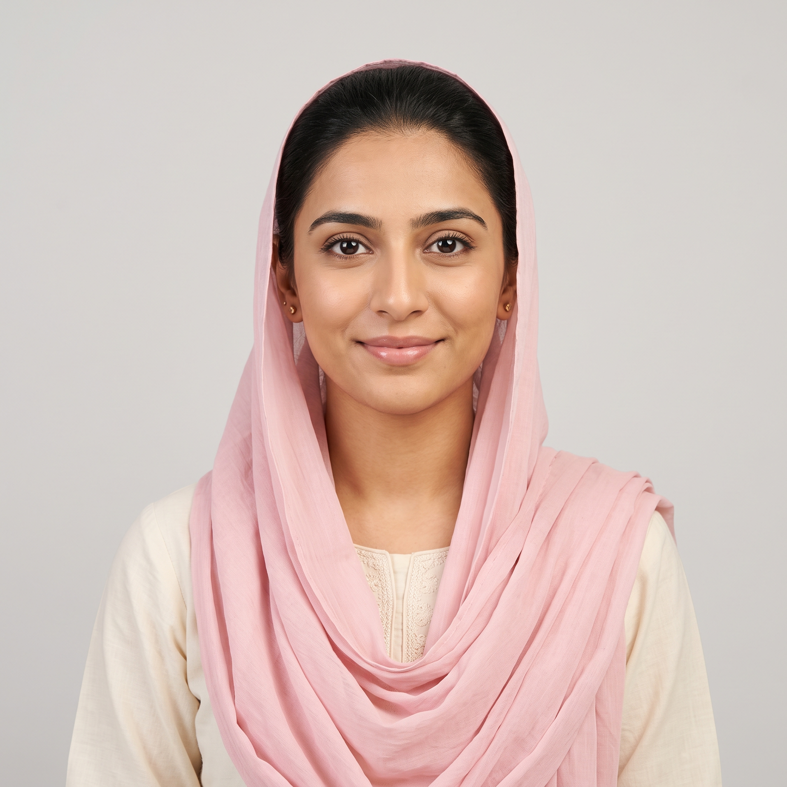

Floor 1
R1 (f)
Ayesha Tariq
Reception & Admin · Age 22
Fresh out of Kinnaird. Keeping a second notebook.
Private Character Bible · Confidential
A working dossier of every person inside the building.
Ground Operations
Creative Wing
Client & Executive
Click a portrait to open the full file.

Floor 1Reception & Admin · Age 22
Fresh out of Kinnaird. Keeping a second notebook.
Character File · Writer's Cut
Five foot four, slight frame, warm olive skin she inherited from her mother. Her hair is long past the shoulder blades and she keeps it in a low bun at work because her mother said loose hair on a receptionist looks unserious. On weekends she lets it down and it curls at the ends from being braided damp. Her hands are small, her nails always clean and short. She bites the inside of her left cheek when she is thinking, and there is a small permanent tenderness there she notices every morning when she rinses.
She has a scar on her right knee from falling off a bicycle at eight years old. Her father had let her ride without training wheels for the first time and she had refused to cry in front of him. That refusal is still in her.
Her voice at the reception desk is a full step higher than her real voice. She has been doing this so long she does not notice she is doing it anymore. Her sister does. Her sister has told her to stop.
Single-storey, four bedrooms, built in the seventies by her grandfather and never renovated properly. The paint in the drawing room is a colour her mother calls peach and her father calls pink, and they have been fighting about it in a low-grade way for two decades. Ayesha's room is the smallest. She gave up the larger one when her brothers were born because her mother wanted the boys to have space to move. She has never fully forgiven this, though she pretends she has, and the pretending has become the bigger habit.
Her father is a retired mid-level banker who now runs a small currency-exchange business from a shop in Ichhra with his cousin. He is not unkind but he is exhausted and disappointed in a way he cannot name, and it comes out sideways at dinner. Her mother teaches Islamiat at a private school two mornings a week and holds the house together the other five. Ayesha loves her mother in the specific, complicated way of a first daughter who has watched her mother make herself smaller for a very long time.
Her brothers are fourteen and eleven. The fourteen-year-old is quiet and academic and slightly afraid of her. The eleven-year-old thinks she is a celebrity because she works in a building with a glass front and comes home talking about clients. She lets him think this. It is the softest part of her day.
Her older sister Anum is twenty-six, married three years ago into a family in Faisal Town, one small son. Anum is the confidante. They speak every night at 10:47 p.m. Ayesha has trained her phone to remind her, though Anum always calls first anyway. The call is nominally about the baby, or a saas story, or a Turkish serial they both pretend not to watch. It is actually about Ayesha's day. Anum is the only person alive who knows Ayesha keeps the second notebook.
Anum married the boy her parents chose, and it worked out, sort of. Her husband is decent, her mother-in-law is tolerable, the boy is healthy. She tells Ayesha to hold out. She tells Ayesha not to accept the first rishta with volume behind it. She says it in a specific tone that means I did, and I am fine, but do not do it because I did it.
The 10:47 call is Ayesha's safety valve. On the two nights this year Anum has missed it — once because the baby was sick, once because she was fighting with her husband — Ayesha did not sleep.
The digital sign-in glitches. This is true, and it is why she keeps a paper log, and this is what she tells people. It is also true that eight months ago, in her second week, she watched a man walk in without signing, get shown up to Floor 3 by Bilal Ahmed personally, spend forty minutes in E2's cabin, and walk out without signing out, and nothing in any system anywhere had a record he had been in the building. That night at home she started a second notebook.
The first notebook is on her desk in a green plastic cover. Anyone can look at it. It is her official log.
The second notebook is a black hard-back Moleskine her sister gave her at graduation. She keeps it in the false bottom of her handbag, under a folded dupatta she never wears. She writes in it at home, at night, after the 10:47 call. She uses her own shorthand, a mix of Urdu and English initials, and dates every entry.
In the second notebook she has recorded: seventeen visitors over eight months who did not sign in and did not sign out, eleven of them escorted by Bilal personally; three separate late-evening deliveries by a courier whose company name she cannot find registered anywhere in Pakistan; the fact that F3 (Imran Chaudhry) has twice this quarter walked past her carrying a manila envelope he did not want her to see, and both times he was going down to the parking lot rather than up to Finance, which does not match how anyone normally moves in this building.
She does not know what any of it means. She has not shown it to anyone except Anum, who has told her repeatedly to stop. She has not stopped.
She is up at 6:10, prays Fajr with her mother in the small musalla in the corner of her parents' room, helps her mother lay out the boys' uniforms, eats half a paratha standing over the kitchen counter because sitting down at 6:40 means she will not want to leave. She showers by 7:00, dresses by 7:20. Always shalwar kameez, always pastel, always ironed the night before because her mother believes a woman who irons in the morning is a woman whose life is not in order.
The Uber is booked for 7:35. She used to take a rickshaw and the drivers would say things she did not want to repeat to her sister. Uber costs more. She has cut lunches to afford it and eats a plain paratha wrapped in foil from home instead of using the office canteen.
She reaches Halcyon Reach at 8:05 on a good day, 8:25 on a bad one. She checks the generator status on Hira Malik's board, refills the water dispenser in the reception waiting area herself even though it is officially Bilal's job, and she is at her desk by 8:30. The building fills between 9:00 and 10:00. She watches everyone come in. She logs everyone. She smiles at everyone.
Lunch is 1:30 to 2:15. She eats at her desk. She uses the twenty free minutes to read the internal job postings on the intranet on her phone, because she does not want to be caught scrolling on the desktop terminal. There is nothing in PR yet. There has not been anything in PR for six months. She is beginning to suspect the hiring freeze is departmental and not company-wide, which would mean somebody upstairs does not want new PR hires seeing something.
She leaves at 6:15 unless there is a client dinner running late in the Floor 3 boardroom, in which case she stays until whoever locks it up leaves, because Bilal does not like her leaving before the building is properly closed. She has stayed until 9:40 twice this month. Both times she noted who was in the boardroom in the second notebook.
Home by 7:30 on a normal day. Dinner with the family, the boys' homework, forty minutes of the Turkish drama with her mother, the 10:47 call, then the notebook, then bed by midnight.
She is tired in a way she has not told anyone yet.
Three so far this year. Her mother screens them, her father approves the shortlist, Ayesha meets them across the coffee table in the drawing room with the peach-or-pink walls. The first was a cousin of a family friend, a pharmacist in Sialkot who did not look at her once. The second was an engineer in Sharjah — good on paper, and her father would have said yes if Ayesha had not said, that night in the kitchen with only her mother present, not yet, Amma, I am twenty-two, please. Her mother said nothing, then said okay, and she has been Ayesha's shield since.
The third was two weeks ago. A doctor. FCPS in his final year at Mayo. Her father is bringing him up at breakfast twice a week now. Her mother has stopped shielding, quietly, because a doctor is a doctor.
Ayesha has not told anyone that she looked the family up online and found a photograph of this doctor at a wedding with his arm around a woman she is fairly sure is not a sister. She has not decided yet if this is her way out or if it is nothing.
Her salary is 45,000 rupees a month. She keeps 8,000 for herself, gives 25,000 to her father for household, sends 5,000 to a woman in her mother's village she has never met but who her mother has been sending money to for as long as Ayesha can remember, and puts 7,000 into a savings account her father does not know exists. The account is in her own name. It has 61,000 rupees in it.
She opened it with a lie to her mother about needing an office bank account for salary deposit, which was true, but she opened a second one at the same visit that they do not know about.
She is saving toward something. She has not said what, even to Anum. She has three shapes for it in her head: a masters programme abroad, a rental deposit if she ever needs to leave home in a hurry, or a lawyer.
The lawyer shape is new. It appeared three weeks ago and she has not been able to make it leave.
Bilal Ahmed (R3, admin coordinator). Her floor-mate. She likes him, in the way you like a person who has been steady and correct to you for eight months. He calls her beta and brings her a cup of tea on days he sees her looking tired. He also personally escorts eleven of the seventeen unlogged visitors. She has not been able to hold both of these facts in the same room in her head. When she tries, her stomach turns over. So mostly she does not try.
Kamran Sheikh (H3, HR business partner for Floor 3). He noticed her three months ago. He has taken to stopping by reception on his way up. He asks about her career plans. He said, once, a girl like you should not stay at that desk. He has offered to look at her CV. She has not sent it yet. Anum told her to send it. Ayesha has hesitated in a way she does not want to examine, because Kamran is also the HR person the executives go to when they want a situation to disappear, and she has heard him laugh with E1 in a way she did not like the sound of.
Faraz Habib (E2, co-founder and CCO). Him she does not watch. She avoids watching him. He greeted her by name in her third week and she does not know how he knew it. She has not been comfortable in his presence since. There is nothing she can point to. He is polite. He is warm. He is the person the man in her first notebook entry went to see.
Imran Chaudhry (F3, Accounts Payable). The manila envelope. Twice.
She has a memory for faces closer to a gift than a skill. She can recall a visitor from her second week with the same clarity as one from yesterday. She reads people fast, and quietly, because she has spent twenty-two years reading a father whose moods change the temperature of the house. She can hold three languages in her head at once and switch between them mid-sentence without noticing. She is faster on the phone than anyone in the building. She keeps calm in a way that looks like blankness, which is useful, because people talk in front of blankness the way they do not talk in front of intelligence.
Her Media Studies degree taught her, almost by accident, how to read a document for what it is trying not to say. She has started reading Halcyon Reach's internal memos this way.
Saying no to her father. Saying no to Kamran. Saying no in general when the person asking is older and male and does not look at her while asking. She is working on it. She has practised in the mirror. It has not translated yet.
She underestimates herself in a way she thinks is humility and is actually fear. She overestimates how well she is hiding the second notebook — it is well-hidden, but she believes it is invisible, and it is not.
She has never had a proper romantic relationship and she thinks this is a personal defect. It is not. It is simply that nobody in her life has been safe enough yet.
She bites the inside of her left cheek when she is thinking. She touches the small silver taweez at her throat when she is frightened — a habit her mother gave her at fourteen. She goes very still when she overhears something important, and the stillness is her tell; anyone paying real attention would see it, and she does not know that yet.
She laughs a beat too late at jokes she does not find funny. She laughs immediately at jokes she does. Her real laugh is louder than her office laugh by a wide margin.
She checks her phone at 10:44 every night. Three minutes early. She has not admitted to herself that she is nervous her sister will not call.
She prays five times, most days. She has skipped Asr twice this month because the reception desk cannot be left uncovered and Hira has been out both afternoons. She feels guilty about it in a specific way that is separate from her mother's guilt about it, which is louder. She reads two pages of the Quran in translation before bed, in English, because her Arabic recitation is faster than her comprehension and she wants both.
She has begun praying a specific dua her grandmother taught her — the one for protection from a hidden enemy — every night after the 10:47 call. She has not told her grandmother, who is dead. She has not told Anum, who is alive.
Six weeks ago, coming out of the office late on one of the boardroom nights, she was in the parking lot waiting for her Uber. She saw Bilal Ahmed hand an envelope to a man in a car whose registration plate she memorised without deciding to. She wrote the plate in the second notebook and drew a small circle around it. Two days later she looked the plate up on a public vehicle database on her phone in the bathroom during lunch. It came back registered to a shell.
She has not told Anum this because Anum would tell her to burn the notebook.
She has not burned the notebook.
She has, instead, started to think, carefully, at night, with the light off, about what she would do if she were followed home. She has mapped three routes from the office to Model Town that avoid the main roads. She has practised, on quiet Sundays, walking each of them. She tells herself this is being sensible. It is being sensible. It is also being afraid.
To be taken seriously. To not be a receptionist at thirty. To finish the masters her father says the family cannot afford. To choose the man she marries, and to choose him because she wants to, not because he is the least worst option in a stack of shortlisted CVs. To help Anum's son grow up in a country that is not this one. To be, someday, the woman in the corner cabin on Floor 3 who has earned the door being closed.
Underneath all of that, and this she has not admitted even in the notebook: she wants to know what is happening in her building, and she wants to be the person who finds out.
Her father's disappointment. Her mother's silence. Being alone in the office at night. Being the kind of woman men stop looking at once she is older than a certain number they never name. The doctor from Mayo. The doctor from Mayo turning out to be fine. The doctor from Mayo turning out not to be fine and her having to say so.
That someone in the building has already noticed her noticing.
That she is right about what she thinks she has seen.
That she is wrong about it, and has been building a shape out of nothing, and is going a little bit mad in a house she cannot leave.
She is at her desk. It is a Tuesday. It is 4:12 p.m. The second notebook is in the false bottom of her handbag, which is under her desk, and she has just watched a man walk past reception without signing in, and Bilal Ahmed is not on the floor to escort him.
She reaches, without looking, for the small silver taweez at her throat.